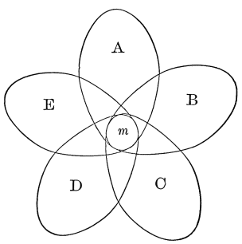

Chapter 22: Reasoning¶
22.1 Reasoning¶
What Reasoning is.—We talk of man being the rational animal; and the traditional intellectualist philosophy has always made a great point of treating the brutes as wholly irrational creatures. Nevertheless, it is by no means easy to decide just what is meant by reason, or how the peculiar thinking process called reasoning differs from other thought-sequences which may lead to similar results.
Much of our thinking consists of trains of images suggested one by another, of a sort of spontaneous revery of which it seems likely enough that the higher brutes should be capable. This sort of thinking leads nevertheless to rational conclusions, both practical and theoretical. The links between the terms are either 'contiguity' or 'similarity,' and with a mixture of both these things we can hardly be very incoherent. As a rule, in this sort of irresponsible thinking, the terms which fall to be coupled together are empirical concretes, not abstractions. A sunset may call up the vessel's deck from which I saw one last summer, the companions of my voyage, my arrival into port, etc.; or it may make me think of solar myths, of Hercules' and Hector's funeral pyres, of Homer and whether he could write, of the Greek alphabet, etc. If habitual contiguities predominate, we have a prosaic mind; if rare contiguities, or similarities, have free play, we call the person fanciful, poetic, or witty. But the thought as a rule is of matters taken in their entirety. Having been thinking of one, we find later that we are thinking of another, to which we have been lifted along, we hardly know how. If an abstract quality figures in the procession, it arrests our attention but for a moment, and fades into something else; and is never very abstract. Thus, in thinking of the sun-myths, we may have a gleam of admiration at the gracefulness of the primitive human mind, or a moment of disgust at the narrowness of modern interpreters. But, in the main, we think less of qualities than of concrete things, real or possible, just as we may experience them.
Our thought here may be rational, but it is not reasoned, is not reasoning in the strict sense of the term. In reasoning, although our results may be thought of as concrete things, they are not suggested immediately by other concrete things, as in the trains of simply associative thought. They are linked to the concretes which precede them by intermediate steps, and these steps are formed by abstract general characters articulately denoted and expressly analyzed out. A thing inferred by reasoning need neither have been an habitual associate of the datum from which we infer it, nor need it be similar to it. It may be a thing entirely unknown to our previous experience, something which no simple association of concretes could ever have evoked. The great difference, in fact, between that simpler kind of rational thinking which consists in the concrete objects of past experience merely suggesting each other, and reasoning distinctively so called, is this: that whilst the empirical thinking is only reproductive, reasoning is productive. An empirical, or 'rule-of-thumb,' thinker can deduce nothing from data with whose behavior and associates in the concrete he is unfamiliar. But put a reasoner amongst a set of concrete objects which he has neither seen nor heard of before, and with a little time, if he is a good reasoner, he will make such inferences from them as will quite atone for his ignorance. Reasoning helps us out of unprecedented situations—situations for which all our common associative wisdom, all the 'education' which we share in common with the beasts, leaves us without resource.
Exact Definition of it.—Let us make this ability to deal with novel data the technical differentia of reasoning. This will sufficiently mark it out from common associative thinking, and will immediately enable us to say just what peculiarity it contains.
It contains analysis and abstraction. Whereas the merely empirical thinker stares at a fact in its entirety, and remains helpless, or gets 'stuck,' if it suggests no concomitant or similar, the reasoner breaks it up and notices some one of its separate attributes. This attribute he takes to be the essential part of the whole fact before him. This attribute has properties or consequences which the fact until then was not known to have, but which, now that it is noticed to contain the attribute, it must have.
Call the fact or concrete datum S;
the essential attribute M;
the attribute's property P.
Then the reasoned inference of P from S cannot be made without M's intermediation. The 'essence' M is thus that third or middle term in the reasoning which a moment ago was pronounced essential. For his original concrete S the reasoner substitutes its abstract property M. What is true of M, what is coupled with M, thereupon holds true of S, is coupled with S. As M is properly one of the parts of the entire S, reasoning may then be very well defined as the substitution of parts and their implications or consequences for wholes. And the art of the reasoner will consist of two stages:
First, sagacity, or the ability to discover what part, M, lies embedded in the whole S which is before him;
Second, learning, or the ability to recall promptly M's consequences, concomitants, or implications.
If we glance at the ordinary syllogism—
⁂ M is P;
S is M;
S is P
—we see that the second or minor premise, the 'subsumption' as it is sometimes called, is the one requiring the sagacity; the first or major the one requiring the fertility, or fulness of learning. Usually the learning is more apt to be ready than the sagacity, the ability to seize fresh aspects in concrete things being rarer than the ability to learn old rules; so that, in most actual cases of reasoning, the minor premise, or the way of conceiving the subject, is the one that makes the novel step in thought. This is, to be sure, not always the case; for the fact that M carries P with it may also be unfamiliar and now formulated for the first time.
The perception that S is M is a mode of conceiving S. The statement that M is P is an abstract or general proposition. A word about both is necessary.
What is meant by a Mode of Conceiving.—When we conceive of S merely as M (of vermilion merely as a mercury-compound, for example), we neglect all the other attributes which it may have, and attend exclusively to this one. We mutilate the fulness of S's reality. Every reality has an infinity of aspects or properties. Even so simple a fact as a line which you trace in the air may be considered in respect to its form, its length, its direction, and its location. When we reach more complex facts, the number of ways in which we may regard them is literally endless. Vermilion is not only a mercury-compound, it is vividly red, heavy, and expensive, it comes from China, and so on, ad infinitum. All objects are well-springs of properties, which are only little by little developed to our knowledge, and it is truly said that to know one thing thoroughly would be to know the whole universe. Mediately or immediately, that one thing is related to everything else; and to know all about it, all its relations need be known. But each relation forms one of its attributes, one angle by which some one may conceive it, and while so conceiving it may ignore the rest of it. A man is such a complex fact. But out of the complexity all that an army commissary picks out as important for his purposes is his property of eating so many pounds a day; the general, of marching so many miles; the chair-maker, of having such a shape; the orator, of responding to such and such feelings; the theatre-manager, of being willing to pay just such a price, and no more, for an evening's amusement. Each of these persons singles out the particular side of the entire man which has a bearing on his concerns, and not till this side is distinctly and separately conceived can the proper practical conclusions for that reasoner be drawn; and when they are drawn the man's other attributes may be ignored.
All ways of conceiving a concrete fact, if they are true ways at all, are equally true ways. There is no property ABSOLUTELY essential to any one thing. The same property which figures as the essence of a thing on one occasion becomes a very inessential feature upon another. Now that I am writing, it is essential that I conceive my paper as a surface for inscription. If I failed to do that, I should have to stop my work. But if I wished to light a fire, and no other materials were by, the essential way of conceiving the paper would be as combustible material; and I need then have no thought of any of its other destinations. It is really all that it is: a combustible, a writing surface, a thin thing, a hydrocarbonaceous thing, a thing eight inches one way and ten another, a thing just one furlong east of a certain stone in my neighbor's field, an American thing, etc., etc., ad infinitum. Whichever one of these aspects of its being I temporarily class it under makes me unjust to the other aspects. But as I always am classing it under one aspect or another, I am always unjust, always partial, always exclusive. My excuse is necessity—the necessity which my finite and practical nature lays upon me. My thinking is first and last and always for the sake of my doing, and I can only do one thing at a time. A God who is supposed to drive the whole universe abreast may also be supposed, without detriment to his activity, to see all parts of it at once and without emphasis. But were our human attention so to disperse itself, we should simply stare vacantly at things at large and forfeit our opportunity of doing any particular act. Mr. Warner, in his Adirondack story, shot a bear by aiming, not at his eye or heart, but 'at him generally.' But we cannot aim 'generally' at the universe; or if we do, we miss our game. Our scope is narrow, and we must attack things piecemeal, ignoring the solid fulness in which the elements of Nature exist, and stringing one after another of them together in a serial way, to suit our little interests as they change from hour to hour. In this, the partiality of one moment is partly atoned for by the different sort of partiality of the next. To me now, writing these words, emphasis and selection seem to be the essence of the human mind. In other chapters other qualities have seemed, and will again seem, more important parts of psychology.
Men are so ingrainedly partial that, for common-sense and scholasticism (which is only common-sense grown articulate), the notion that there is no one quality genuinely, absolutely, and exclusively essential to anything is almost unthinkable. "A thing's essence makes it what it is. Without an exclusive essence it would be nothing in particular, would be quite nameless, we could not say it was this rather than that. What you write on, for example,—why talk of its being combustible, rectangular, and the like, when you know that these are mere accidents, and that what it really is, and was made to be, is just paper and nothing else?" The reader is pretty sure to make some such comment as this. But he is himself merely insisting on an aspect of the thing which suits his own petty purpose, that of naming the thing; or else on an aspect which suits the manufacturer's purpose, that of producing an article for which there is a vulgar demand. Meanwhile the reality overflows these purposes at every pore. Our usual purpose with it, our commonest title for it, and the properties which this title suggests, have in reality nothing sacramental. They characterize us more than they characterize the thing. But we are so stuck in our prejudices, so petrified intellectually, that to our vulgarest names, with their suggestions, we ascribe an eternal and exclusive worth. The thing must be, essentially, what the vulgarest name connotes; what less usual names connote, it can be only in an 'accidental' and relatively unreal sense.1
Locke undermined the fallacy. But none of his successors, so far as I know, have radically escaped it, or seen that the only meaning of essence is teleological, and that classification and conception are purely teleological weapons of the mind. The essence of a thing is that one of its properties which is so important for my interests that in comparison with it I may neglect the rest. Amongst those other things which have this important property I class it, after this property I name it, as a thing endowed with this property I conceive it; and whilst so classing, naming, and conceiving it, all other truth about it becomes to me as naught. The properties which are important vary from man to man and from hour to hour. Hence divers appellations and conceptions for the same thing. But many objects of daily use—as paper, ink, butter, overcoat—have properties of such constant unwavering importance, and have such stereotyped names, that we end by believing that to conceive them in those ways is to conceive them in the only true way. Those are no truer ways of conceiving them than any others; they are only more frequently serviceable ways to us.
Reasoning is always for a subjective interest. To revert now to our symbolic representation of the reasoning process:
M is P
S is M
S is P
M is discerned and picked out for the time being to be the essence of the concrete fact, phenomenon, or reality, S. But M in this world of ours is inevitably conjoined with P; so that P is the next thing that we may expect to find conjoined with the fact S. We may conclude or infer P, through the intermediation of the M which our sagacity began by discerning, when S came before it, to be the essence of the case.
Now note that if P have any value or importance for us, M was a very good character for our sagacity to pounce upon and abstract. If, on the contrary, P were of no importance, some other character than M would have been a better essence for us to conceive of S by. Psychologically, as a rule, P overshadows the process from the start. We are seeking P, or something like P. But the bare totality of S does not yield it to our gaze; and casting about for some point in S to take hold of which will lead us to P, we hit, if we are sagacious, upon M, because M happens to be just the character which is knit up with P. Had we wished Q instead of P, and were N a property of S conjoined with Q, we ought to have ignored M, noticed N, and conceived of S as a sort of N exclusively.
Reasoning is always to attain some particular conclusion, or to gratify some special curiosity. It not only breaks up the datum placed before it and conceives it abstractly; it must conceive it rightly too; and conceiving it rightly means conceiving it by that one particular abstract character which leads to the one sort of conclusion which it is the reasoner's temporary interest to attain.
The results of reasoning may be hit upon by accident. The stereoscope was actually a result of reasoning; it is conceivable, however that a man playing with pictures and mirrors might accidentally have hit upon it. Cats have been known to open doors by pulling latches, etc. But no cat, if the latch got out of order, could open the door again, unless some new accident of random fumbling taught her to associate some new total movement with the total phenomenon of the closed door. A reasoning man, however, would open the door by first analyzing the hindrance. He would ascertain what particular feature of the door was wrong. The lever, e.g., does not raise the latch sufficiently from its slot—case of insufficient elevation: raise door bodily on hinges! Or door sticks at bottom by friction against sill: raise it bodily up! How it is obvious that a child or an idiot might without this reasoning learn the rule for opening that particular door. I remember a clock which the maid-servant had discovered would not go unless it were supported so as to tilt slightly forwards. She had stumbled on this method after many weeks of groping. The reason of the stoppage was the friction of the pendulum-bob against the back of the clock-case, a reason which an educated man would have analyzed out in five minutes. I have a student's lamp of which the flame vibrates most unpleasantly unless the chimney be raised about a sixteenth of an inch. I learned the remedy after much torment by accident, and now always keep the chimney up with a small wedge. But my procedure is a mere association of two totals, diseased object and remedy. One learned in pneumatics could have abstracted the cause of the disease, and thence inferred the remedy immediately. By many measurements of triangles one might find their area always equal to their height multiplied by half their base, and one might formulate an empirical law to that effect. But a reasoner saves himself all this trouble by seeing that it is the essence (pro hac vice) of a triangle to be the half of a parallelogram whose area is the height into the entire base. To see this he must invent additional lines; and the geometer must often draw such to get at the essential property he may require in a figure. The essence consists in some relation of the figure to the new lines, a relation not obvious at all until they are put in. The geometer's genius lies in the imagining of the new lines, and his sagacity in the perceiving of the relation.
Thus, there are two great points in reasoning. First, an extracted character is taken as equivalent to the entire datum from which it comes; and,
Second, the character thus taken suggests a certain consequence more obviously than it was suggested by the total datum as it originally came. Take these points again, successively.
1) Suppose I say, when offered a piece of cloth, "I won't buy that; it looks as if it would fade," meaning merely that something about it suggests the idea of fading to my mind,—my judgment, though possibly correct, is not reasoned, but purely empirical; but if I can say that into the color there enters a certain dye which I know to be chemically unstable, and that therefore the color will fade, my judgment is reasoned. The notion of the dye, which is one of the parts of the cloth, is the connecting link between the latter and the notion of fading. So, again, an uneducated man will expect from past experience to see a piece of ice melt if placed near the fire, and the tip of his finger look coarse if he view it through a convex glass. In neither of these cases could the result be anticipated without full previous acquaintance with the entire phenomenon. It is not a result of reasoning.
But a man who should conceive heat as a mode of motion, and liquefaction as identical with increased motion of molecules; who should know that curved surfaces bend light-rays in special ways, and that the apparent size of anything is connected with the amount of the 'bend' of its light-rays as they enter the eye,—such a man would make the right inferences for all these objects, even though he had never in his life had any concrete experience of them: and he would do this because the ideas which we have above supposed him to possess would mediate in his mind between the phenomena he starts with and the conclusions he draws. But these ideas are all mere extracted portions or circumstances. The motions which form heat, the bending of the light-waves, are, it is true, excessively recondite ingredients; the hidden pendulum I spoke of above is less so; and the sticking of a door on its sill in the earlier example would hardly be so at all. But each and all agree in this, that they bear a more evident relation to the conclusion than did the facts in their immediate totality.
2) And now to prove the second point: Why are the couplings, consequences, and implications of extracts more evident and obvious than those of entire phenomena? For two reasons.
First, the extracted characters are more general than the concretes, and the connections they may have are, therefore, more familiar to us, having been more often met in our experience. Think of heat as motion, and whatever is true of motion will be true of heat; but we have had a hundred experiences of motion for every one of heat. Think of the rays passing through this lens as bending towards the perpendicular, and you substitute for the comparatively unfamiliar lens the very familiar notion of a particular change in direction of a line, of which notion every day brings us countless examples.
The other reason why the relations of the extracted characters are so evident is that their properties are so few, compared with the properties of the whole, from which we derived them. In every concrete fact the characters and their consequences are so inexhaustibly numerous that we may lose our way among them before noticing the particular consequence it behooves us to draw. But, if we are lucky enough to single out the proper character, we take in, as it were, by a single glance all its possible consequences. Thus the character of scraping the sill has very few suggestions, prominent among which is the suggestion that the scraping will cease if we raise the door; whilst the entire refractory door suggests an enormous number of notions to the mind. Such examples may seem trivial, but they contain the essence of the most refined and transcendental theorizing. The reason why physics grows more deductive the more the fundamental properties it assumes are of a mathematical sort, such as molecular mass or wave-length, is that the immediate consequences of these notions are so few that we can survey them all at once, and promptly pick out those which concern us.
Sagacity.—To reason, then, we must be able to extract characters,—not any characters, but the right characters for our conclusion. If we extract the wrong character, it will not lead to that conclusion. Here, then, is the difficulty: How are characters extracted, and why does it require the advent of a genius in many cases before the fitting character is brought to light? Why cannot anybody reason as well as anybody else? Why does it need a Newton to notice the law of the squares, a Darwin to notice the survival of the fittest? To answer these questions we must begin a new research, and see how our insight into facts naturally grows.
All our knowledge at first is vague. When we say that a thing is vague, we mean that it has no subdivisions ab intra, nor precise limitations ab extra; but still all the forms of thought may apply to it. It may have unity, reality, externality, extent, and what not—thinghood, in a word, but thinghood only as a whole. In this vague way, probably, does the room appear to the babe who first begins to be conscious of it as something other than his moving nurse. It has no subdivisions in his mind, unless, perhaps, the window is able to attract his separate notice. In this vague way, certainly, does every entirely new experience appear to the adult. A library, a museum, a machine-shop, are mere confused wholes to the uninstructed, but the machinist, the antiquary, and the bookworm perhaps hardly notice the whole at all, so eager are they to pounce upon the details. Familiarity has in them bred discrimination. Such vague terms as 'grass,' 'mould,' and 'meat' do not exist for the botanist or the anatomist. They know too much about grasses, moulds, and muscles. A certain person said to Charles Kingsley, who was showing him the dissection of a caterpillar, with its exquisite viscera, "Why, I thought it was nothing but skin and squash!" A layman present at a shipwreck, a battle, or a fire is helpless. Discrimination has been so little awakened in him by experience that his consciousness leaves no single point of the complex situation accented and standing out for him to begin to act upon. But the sailor, the fireman, and the general know directly at what corner to take up the business. They 'see into the situation'—that is, they analyze it—with their first glance. It is full of delicately differenced ingredients which their education has little by little brought to their consciousness, but of which the novice gains no clear idea.
How this power of analysis was brought about we saw in our chapters on Discrimination and Attention. We dissociate the elements of originally vague totals by attending to them or noticing them alternately, of course. But what determines which element we shall attend to first? There are two immediate and obvious answers: first, our practical or instinctive interests; and second, our æsthetic interests. The dog singles out of any situation its smells, and the horse its sounds, because they may reveal facts of practical moment, and are instinctively exciting to these several creatures. The infant notices the candle-flame or the window, and ignores the rest of the room, because those objects give him a vivid pleasure. So, the country boy dissociates the blackberry, the chestnut, and the wintergreen, from the vague mass of other shrubs and trees, for their practical uses, and the savage is delighted with the beads, the bits of looking-glass, brought by an exploring vessel, and gives no heed to the features of the vessel itself, which is too much beyond his sphere. These æsthetic and practical interests, then, are the weightiest factors in making particular ingredients stand out in high relief. What they lay their accent on, that we notice; but what they are in themselves we cannot say. We must content ourselves here with simply accepting them as irreducible ultimate factors in determining the way our knowledge grows.
Now, a creature which has few instinctive impulses, or interests practical or æsthetic, will dissociate few characters, and will, at best, have limited reasoning powers; whilst one whose interests are very varied will reason much better. Man, by his immensely varied instincts, practical wants, and æsthetic feelings, to which every sense contributes, would, by dint of these alone, be sure to dissociate vastly more characters than any other animal; and accordingly we find that the lowest savages reason incomparably better than the highest brutes. The diverse interests lead, too, to a diversification of experiences, whose accumulation becomes a condition for the play of that law of dissociation by varying concomitants of which I treated on p. 251.
The Help given by Association by Similarity.—It is probable, also, that man's superior association by similarity has much to do with those discriminations of character on which his higher flights of reasoning are based. As this latter is an important matter, and as little or nothing was said of it in the chapter on Discrimination, it behooves me to dwell a little upon it here.
What does the reader do when he wishes to see in what the precise likeness or difference of two objects lies? He transfers his attention as rapidly as possible, backwards and forwards, from one to the other. The rapid alteration in consciousness shakes out, as it were, the points of difference or agreement, which would have slumbered forever unnoticed if the consciousness of the objects compared had occurred at widely distant periods of time. What does the scientific man do who searches for the reason or law embedded in a phenomenon? He deliberately accumulates all the instances he can find which have any analogy to that phenomenon; and, by simultaneously filling his mind with them all, he frequently succeeds in detaching from the collection the peculiarity which he was unable to formulate in one alone; even though that one had been preceded in his former experience by all of those with which he now at once confronts it. These examples show that the mere general fact of having occurred at some time in one's experience, with varying concomitants, is not by itself a sufficient reason for a character to be dissociated now. We need something more; we need that the varying concomitants should in all their variety be brought into consciousness at once. Not till then will the character in question escape from its adhesion to each and all of them and stand alone. This will immediately be recognized by those who have read Mill's Logic as the ground of Utility in his famous 'four methods of experimental inquiry,' the methods of agreement, of difference, of residues, and of concomitant variations. Each of these gives a list of analogous instances out of the midst of which a sought-for character may roll and strike the mind.
Now it is obvious that any mind in which association by similarity is highly developed is a mind which will spontaneously form lists of instances like this. Take a present fact A, with a character m in it. The mind may fail at first to notice this character m at all. But if A calls up C, D, E, and F,—these being phenomena which resemble A in possessing m, but which may not have entered for months into the experience of the animal who now experiences A, why, plainly, such association performs the part of the reader's deliberately rapid comparison referred to above, and of the systematic consideration of like cases by the scientific investigator, and may lead to the noticing of m in an abstract way. Certainly this is obvious; and no conclusion is left to us but to assert that, after the few most powerful practical and æsthetic interests, our chief help towards noticing those special characters of phenomena which, when once possessed and named, are used as reasons, class names, essences, or middle terms, is this association by similarity. Without it, indeed, the deliberate procedure of the scientific man would be impossible: he could never collect his analogous instances. But it operates of itself in highly-gifted minds without any deliberation, spontaneously collecting analogous instances, uniting in a moment what in nature the whole breadth of space and time keeps separate, and so permitting a perception of identical points in the midst of different circumstances, which minds governed wholly by the law of contiguity could never begin to attain.

Figure 66 shows this. If m, in the present representation A, calls up B, C, D, and E, which are similar to A in possessing it, and calls them up in rapid succession, then m, being associated almost simultaneously with such varying concomitants, will 'roll out' and attract our separate notice.
If so much is clear to the reader, he will be willing to admit that the mind in which this mode of association most prevails will, from its better opportunity of extricating characters, be the one most prone to reasoned thinking; whilst, on the other hand, a mind in which we do not detect reasoned thinking will probably be one in which association by contiguity holds almost exclusive sway.
Geniuses are, by common consent, considered to differ from ordinary minds by an unusual development of association by similarity. One of Professor Bain's best strokes of work is the exhibition of this truth. It applies to geniuses in the line of reasoning as well as in other lines.
The Reasoning Powers of Brutes.—As the genius is to the vulgarian, so the vulgar human mind is to the intelligence of a brute. Compared with men, it is probable that brutes neither attend to abstract characters, nor have associations by similarity. Their thoughts probably pass from one concrete object to its habitual concrete successor far more uniformly than is the case with us. In other words, their associations of ideas are almost exclusively by contiguity. So far, however, as any brute might think by abstract characters instead of by the association of concretes, he would have to be admitted to be a reasoner in the true human sense. How far this may take place is quite uncertain. Certain it is that the more intelligent brutes obey abstract characters, whether they mentally single them out as such or not. They act upon things according to their class. This involves some sort of emphasizing, if not abstracting, of the class-essence by the animal's mind. A concrete individual with none of his characters emphasized is one thing; a sharply conceived attribute marked off from everything else by a name is another. But between no analysis of a concrete, and complete analysis; no abstraction of an embedded character, and complete abstraction, every possible intermediary grade must lie. And some of these grades ought to have names, for they are certainly represented in the mind. Dr. Romanes has proposed the name recept, and Prof. Lloyd Morgan the name construct, for the idea of a vaguely abstracted and generalized object-class. A definite abstraction is called an isolate by the latter author. Neither construct nor recept seems to me a felicitous word; but poor as both are, they form a distinct addition to psychology, so I give them here. Would such a word as influent sound better than recept in the following passage from Romanes?
"Water-fowl adopt a somewhat different mode of alighting upon land, or even upon ice, from that which they adopt when alighting upon water; and those kinds which dive from a height (such as terns and gannets) never do so upon land or upon ice. These facts prove that the animals have one recept answering to a solid surface, and another answering to a fluid. Similarly a man will not dive from a height over hard ground or over ice, nor will he jump into water in the same way as he jumps upon dry land. In other words, like the water-fowl he has two distinct recepts, one of which answers to solid ground, and the other to an unresisting fluid. But unlike the water-fowl he is able to bestow upon each of these recepts a name, and thus to raise them both to the level of concepts. So far as the practical purposes of locomotion are concerned, it is of course immaterial whether or not he thus raises his recepts into concepts; but ... for many other purposes it is of the highest importance that he is able to do this."2
A certain well-bred retriever of whom I know never bit his birds. But one day having to bring two birds at once, which, though unable to fly, were 'alive and kicking,' he deliberately gave one a bite which killed it, took the other one still alive to his master, and then returned for the first. It is impossible not to believe that some such abstract thoughts as 'alive—get away—must kill,' ... etc., passed in rapid succession through this dog's mind, whatever the sensible imagery may have been with which they were blended. Such practical obedience to the special aspects of things which may be important involves the essence of reasoning. But the characters whose presence impress brutes are very few, being only those which are directly connected with their most instinctive interests. They never extract characters for the mere fun of the thing, as men do. One is tempted to explain this as the result in them of an almost entire absence of such association by similarity as characterizes the human mind. A thing may remind a brute of its full similars, but not of things to which it is but slightly similar; and all that dissociation by varying concomitants, which in man is based so largely on association by similarity, hardly seems to take place at all in the infra-human mind. One total object suggests another total object, and the lower mammals find themselves acting with propriety, they know not why. The great, the fundamental, defect of their minds seems to be the inability of their groups of ideas to break across in unaccustomed places. They are enslaved to routine, to cut-and-dried thinking; and if the most prosaic of human beings could be transported into his dog's soul, he would be appalled at the utter absence of fancy which there reigns. Thoughts would not be found to call up their similars, but only their habitual successors. Sunsets would not suggest heroes' deaths, but supper-time. This is why man is the only metaphysical animal. To wonder why the universe should be as it is presupposes the notion of its being different, and a brute, who never reduces the actual to fluidity by breaking up its literal sequences in his imagination, can never form such a notion. He takes the world simply for granted, and never wonders at it at all.
-
Readers brought up on Popular Science may think that the molecular structure of things is their real essence in an absolute sense, and that water is H-O-H more deeply and truly than it is a solvent of sugar or a slaker of thirst. Not a whit! It is all of these things with equal reality, and the only reason why for the chemist it is H-O-H primarily, and only secondarily the other things, is that for his purpose of laboratory analysis and synthesis, and inclusion in the science which treats of compositions and decompositions, the H-O-H aspect of it is the more important one to bear in mind. ↩
-
Mental Evolution in Man, p. 74. ↩